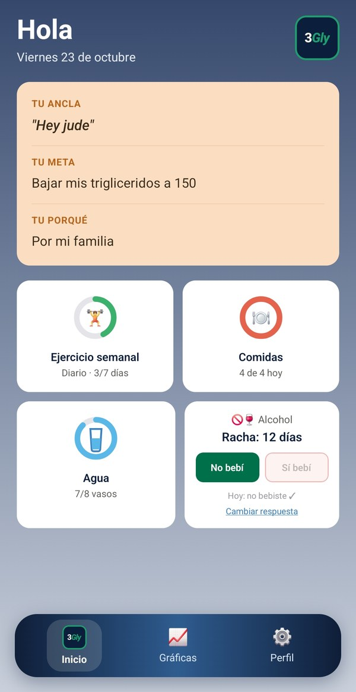
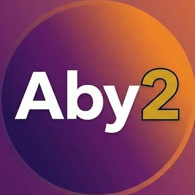

Apps de salud y bienestar
Aleph Subcero crea apps que ayudan a las personas a cuidarse y a cuidar a quienes quieren, con herramientas simples, humanas y al alcance de todos.
Nuestro producto
3Gly
3Gly te acompaña en el seguimiento de tus triglicéridos con hábitos diarios de ejercicio, comidas y agua. Todo parte de tu ancla: eso que te recuerda tu porqué y te regresa al camino.


Nuestra nueva app
Aby2
Aby2 es para quien cuida a un adulto mayor. Organiza en familia las medicinas, las citas y los turnos, y te recuerda que tú también necesitas cuidarte.
Aby2 te ayuda a organizarte. No es un servicio médico: no diagnostica ni receta. Aviso de privacidad · Borrar mi cuenta
Lo que viene
3Gly y Aby2 son los primeros pasos. Estamos construyendo más apps para acercar la salud y el bienestar a más personas, estén donde estén.
Nosotros
Nacimos de la idea de que atender bien a la gente es lo más importante. Cada app que hacemos busca tratar a cada persona con calidez, respeto y cercanía.